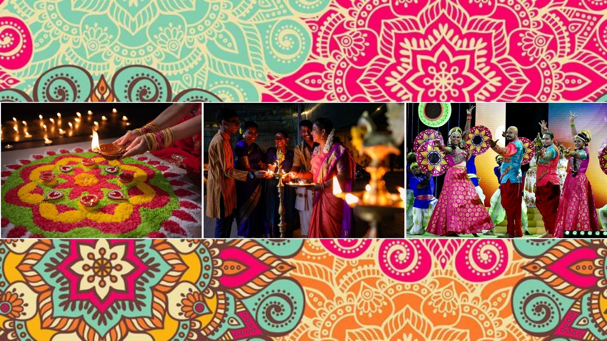
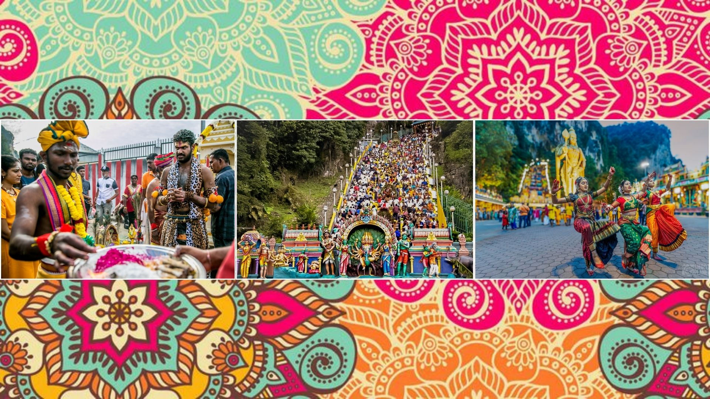

Hari raya Aidilfitri, also known as Eid al-Fitr, is one of the most significant celebrations in Malaysia, marking the end of Ramadan, the Islamic holy month of fasting. It is a joyous occasion where Muslims come together to celebrate their achievements after a month of devotion, prayer, and self-restraint from haram temptations. The day typically begins with sunnah prayers at mosques, followed by visits to the graves of loved ones to offer prayers and pay respects. Muslims also seek forgiveness from family members, symbolizing a fresh start and the strengthening of familial bonds.
Hari Raya Aidiladha
Hari Raya Aidiladha, also known as Eid al-Adha, is one of the most significant celebrations for Muslims in Malaysia, marking the culmination of the Hajj pilgrimage in Mecca. This festival commemorates the willingness of Prophet Ibrahim PBUH to sacrifice his son, Prophet Ismail PBUH as an act of obedience to God, symbolizing faith, devotion, and selflessness. In Malaysia, the day begins with special prayers at mosques, followed by the ritual slaughter (qurban) of halal livestock such as cows, goats, or sheep. The meat is then distributed among family, friends, and especially the less fortunate, reflecting the spirit of charity and community.
Deepavali

Deepavali, also known as the Festival of Lights, is a significant celebration for Hindus in Malaysia, symbolizing the victory of light over darkness and good over evil. It commemorates the return of Lord Rama to Ayodhya after defeating the demon king Ravana, as well as other spiritual victories in Hindu mythology according to their beliefs. The festivities begin with early morning rituals, including a traditional oil bath (gangga snanam), which is believed to purify the body and soul. Families then visit temples to offer prayers and seek blessings, creating an atmosphere of spiritual renewal and gratitude.
Thaipusam

Thaipusam is a major Hindu festival celebrated in Malaysia, dedicated to Lord Murugan, the Hindu god of war and victory. It commemorates the day when Parvati, the goddess of fertility, love, and devotion, gifted her son Murugan a divine spear to vanquish the demon Soorapadman. The festival is marked by a vibrant display of devotion, with thousands of devotees gathering at temples, the most prominent being Batu Caves in Selangor. The celebration often starts with a grand procession, where the statue of Lord Murugan is carried on a decorated chariot accompanied by traditional music and chanting.
Chinese New Year
Chinese New Year, or Lunar New Year, is one of the most vibrant and widely celebrated festivals in Malaysia, particularly by the Chinese community in Malaysia. It marks the beginning of the new lunar calendar that symbolizes prosperity, good fortune, and renewal. Preparations begin weeks in advance, with families cleaning their homes to sweep away bad luck and decorating with red lanterns, banners, and couplets to attract positive energy (ong). The celebration traditionally starts with a family reunion dinner on New Year’s Eve, where dishes like yee sang and dumplings are enjoyed, each carrying symbolic meanings of abundance and unity.
Chap Goh Mei
Chap Goh Mei, also known as the Lantern Festival, marks the fifteenth and final day of Chinese New Year celebrations in Malaysia. It is often referred to as the "Chinese Valentine’s Day" due to the traditional customs where unmarried women would throw mandarin oranges into rivers or seas, hoping to find a suitable partner. These oranges are often inscribed with the woman’s name or contact details, adding a romantic touch to the festive atmosphere. The day is also a time for families to come together for one last reunion dinner, signifying unity and harmony.
Pesta Kaamatan
Pesta Kaamatan, also known as the Harvest Festival, is celebrated annually by the Kadazan-Dusun and other indigenous communities in Sabah, Malaysia. Observed throughout the month of May, with the grand finale on May 30th and 31st, it is a time to give thanks to the rice spirit, Bambaazon, for a bountiful harvest. The festival is steeped in cultural and spiritual significance, with rituals such as the Magavau ceremony, where traditional priests or bobohizan offer prayers to appease the rice spirit and ensure future prosperity.